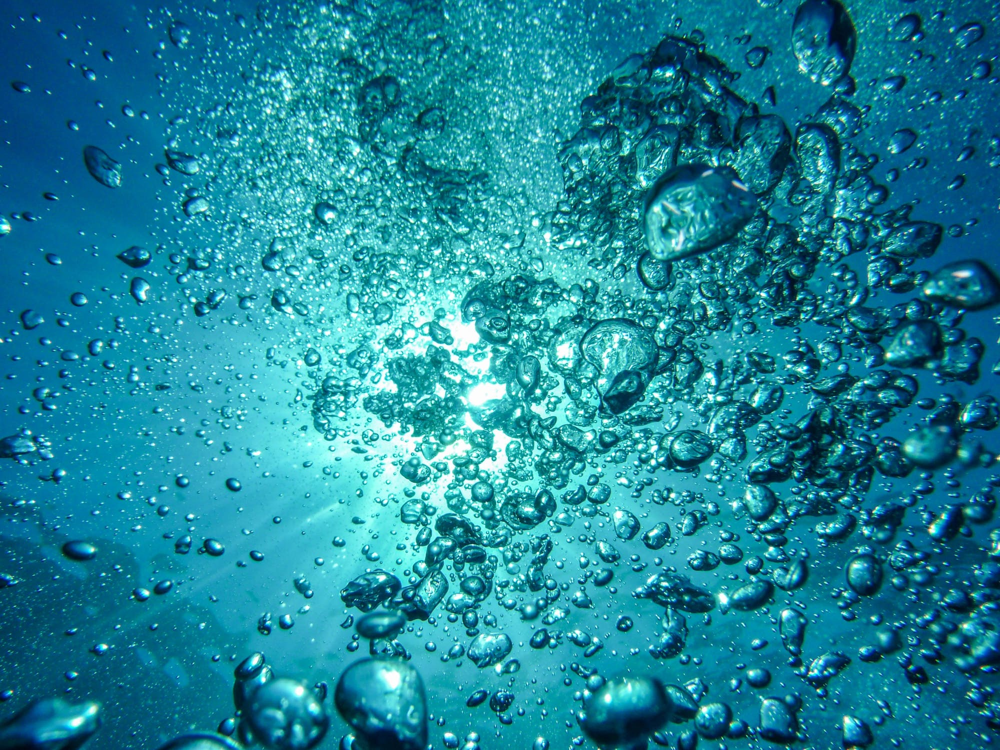

1986- October
1996- Winter
1999- Spring- Summer- Fall- Winter
2000- Spring- Summer- Fall- Winter
2001- Spring- Summer-Fall/Winter- Winter/Spring
2003- Spring
2004- Winter
2007- January- February- April- May- June- November- December
2008- March- May- June- December
2009- March- May- June- August- September- October- November- December
2010- April
2011- 1st Quarter
. Carolinian Canada - Carolinian Canada’s diverse network advances a strategic ‘Big Picture’ vision for healthy landscapes and a green future in Canada’s deep south.
. Friends of the Thames / Thames River Cleanup - The Friends of the Thames has been organising and promoting the Annual Thames River Cleanup every spring for the past 14 years.Environmentally concerned volunteers, landowners, clubs, organizations and municipalities have come together during Earth week to help clean up portions of the Thames River watershed areas.Check out theirContactpage to find out who or what organization is cleaning up your favourite section of the Thames River.
. Nature London - Nature London undertakes a variety of projects to promote environmental awareness, enhance habitat and protect natural areas. MFN members participate in the Christmas Bird Count, the annual Butterfly Count and other initiatives which encourage the study of local natural history.
. Ontario Federation of Anglers and Hunters - You may think you know who they are and what they do, but check the site, you may be surprised!
. Trout Unlimited Canada- To conserve, protect and restore Canada's freshwater resources and their watersheds for current and future generations.
. Angling Sports - 681 Highbury Ave N, London, ON N5W 4L4 (519-649-7429)
. John's Fly Materials - 96 Rectory Street, London, ON N5Z 1Z9 (226-270-9029)
. Angling Outfitters - 684460 Road 68, Woodstock, ON N4S 7V7 (519-539-5494)
. Ian Colin James - This late great great friend of the Thames River and the TRAA was a Fly Fisherman, Tyer, Guide, Instructor, Author, College Prof', Artist, Raconteur, and Man About Town.
Western Ontario Fish & Game Protective Association- Quite likely the oldest and still one of the most viable conservation clubs in the London area. It's also where the TRAA holds their meetings.
. Forest City Fly Fishing Club- Learn everything about all things fly fishing. Also great friends and supporters of the TRAA.
. Real-Time Hydrometric Data - Explore real-time river levels and flows (discharges) before you plan your fishing or canoe/kayak trip.
. Match Angling Club of Ontario- An interesting site with lots of info' on match angling, a growing aspect of our sport in North America.
. SOTTO Fly Fishing Club - This club organizes a series of fun fly fishing competitions across Ontario, one of which is the Thames River Open.
. Thames River Paddling Routes- The aim of this website is to create a single source for accessing information for paddling the Thames River.
@copyright 2019 Traa